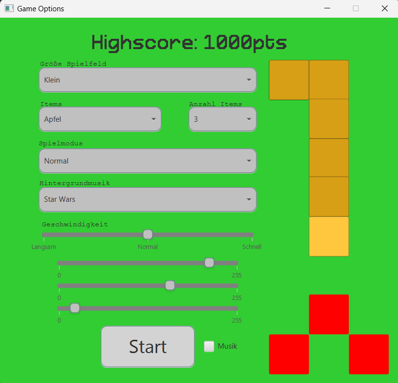

Projekte 3 Klasse bis Heute
Minesweeper
Erstes großes Projekt
Java & JavaFX,
klassisches Projektmanagement
Übersicht


Ziel war es bei diesem Projekt die Rekursion zu lernen und umzusetzen.
displayAdjacentBombCount(posX + i - 1, posY + j - 1,
checkAdjacentBombCount(posX + i - 1, posY + j - 1));
Hier wird eine Funktion wieder und wieder aufgerufen, bis sie alle möglichen Felder geprüft hat.
Snake
Java & JavaFX,
klassisches Projektmanagement
Übersicht

Gameplay

Hier haben wir zum ersten mal alle paar Sekunden eine Funktion aufgerufen.
timeline = new Timeline(
new KeyFrame(
Duration.millis(this.speed),
new EventHandler<ActionEvent() {
@Override
public void handle(ActionEvent actionEvent) {
...
}
}));
timeline.setCycleCount(Animation.INDEFINITE);
timeline.play();